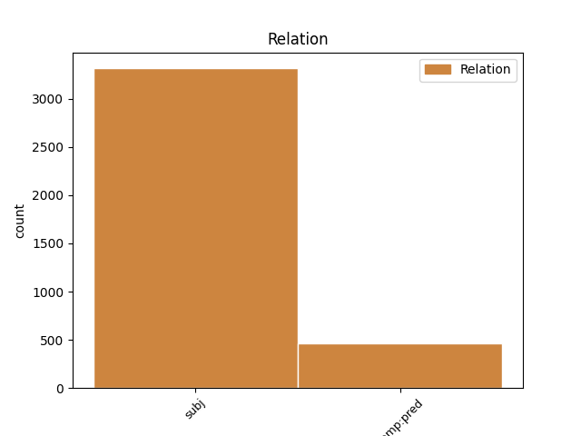
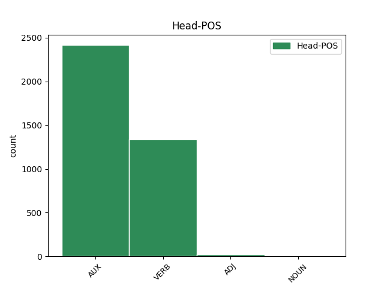
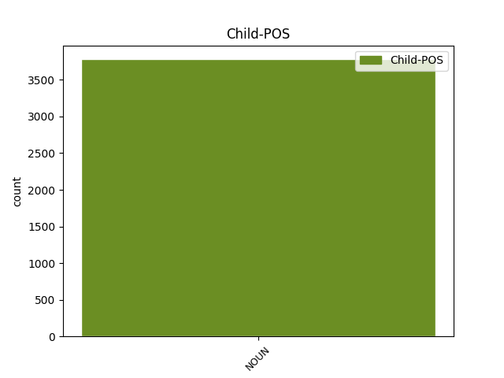

Distribution of features within this leaf



Agreement Rules sorted by frequency.
- When the dependent token is the subject(subj) of the head token, and the dependent token is NOUN.
1 Međutim _ _ _ _ 0 _ _ _
2 , _ _ _ _ 0 _ _ _
3 kao _ _ _ _ 0 _ _ _
4 što _ _ _ _ 0 _ _ _
5 lagano _ _ _ _ 0 _ _ _
6 , _ _ _ _ 0 _ _ _
7 ali _ _ _ _ 0 _ _ _
8 sigurno _ _ _ _ 0 _ _ _
9 napreduje _ _ _ _ 0 _ _ _
10 širenje _ _ _ _ 0 _ _ _
11 nuklearnih _ _ _ _ 0 _ _ _
12 centrala _ _ _ _ 0 _ _ _
13 po _ _ _ _ 0 _ _ _
14 svetu _ _ _ _ 0 _ _ _
15 usred _ _ _ _ 0 _ _ _
16 ekonomske _ _ _ _ 0 _ _ _
17 isplativosti _ _ _ _ 0 _ _ _
18 dogod _ _ _ _ 0 _ _ _
19 nema _ _ _ _ 0 _ _ _
20 akcidenata _ _ _ _ 0 _ _ _
21 , _ _ _ _ 0 _ _ _
22 tako _ _ _ _ 0 _ _ _
23 će _ _ _ _ 0 _ _ _
24 barem _ _ _ _ 0 _ _ _
25 zasad _ _ _ _ 0 _ _ _
26 i _ _ _ _ 0 _ _ _
27 Internet _ _ _ _ 0 _ _ _
28 stvari _ _ _ _ 0 _ _ _
29 nastaviti _ _ _ _ 0 _ _ _
30 da _ _ _ _ 0 _ _ _
31 postaje _ _ _ _ 0 _ _ _
32 realnost _ _ _ _ 0 _ _ _
33 , _ _ _ _ 0 _ _ _
34 dobrim _ _ _ _ 0 _ _ _
35 delom _ _ _ _ 0 _ _ _
36 i _ _ _ _ 0 _ _ _
37 zato _ _ _ _ 0 _ _ _
38 što _ _ _ _ 0 _ _ _
39 su biti AUX Var3p Mood=Ind|Number=Plur|Person=3|Tense=Pres|VerbForm=Fin 0 _ _ _
40 mlađe _ _ _ _ 0 _ _ _
41 generacije generacija NOUN Ncfpn Case=Nom|Gender=Fem|Number=Plur 39 subj _ _
42 već _ _ _ _ 0 _ _ _
43 od _ _ _ _ 0 _ _ _
44 malena _ _ _ _ 0 _ _ _
45 okružene _ _ _ _ 0 _ _ _
46 takvim _ _ _ _ 0 _ _ _
47 tehnološkim _ _ _ _ 0 _ _ _
48 konceptom _ _ _ _ 0 _ _ _
49 , _ _ _ _ 0 _ _ _
50 pa _ _ _ _ 0 _ _ _
51 i _ _ _ _ 0 _ _ _
52 delimično _ _ _ _ 0 _ _ _
53 integrisane _ _ _ _ 0 _ _ _
54 u _ _ _ _ 0 _ _ _
55 njega _ _ _ _ 0 _ _ _
56 . _ _ _ _ 0 _ _ _
1 Međutim _ _ _ _ 0 _ _ _
2 , _ _ _ _ 0 _ _ _
3 kao _ _ _ _ 0 _ _ _
4 što _ _ _ _ 0 _ _ _
5 lagano _ _ _ _ 0 _ _ _
6 , _ _ _ _ 0 _ _ _
7 ali _ _ _ _ 0 _ _ _
8 sigurno _ _ _ _ 0 _ _ _
9 napreduje _ _ _ _ 0 _ _ _
10 širenje _ _ _ _ 0 _ _ _
11 nuklearnih _ _ _ _ 0 _ _ _
12 centrala _ _ _ _ 0 _ _ _
13 po _ _ _ _ 0 _ _ _
14 svetu _ _ _ _ 0 _ _ _
15 usred _ _ _ _ 0 _ _ _
16 ekonomske _ _ _ _ 0 _ _ _
17 isplativosti _ _ _ _ 0 _ _ _
18 dogod _ _ _ _ 0 _ _ _
19 nema _ _ _ _ 0 _ _ _
20 akcidenata _ _ _ _ 0 _ _ _
21 , _ _ _ _ 0 _ _ _
22 tako _ _ _ _ 0 _ _ _
23 će _ _ _ _ 0 _ _ _
24 barem _ _ _ _ 0 _ _ _
25 zasad _ _ _ _ 0 _ _ _
26 i _ _ _ _ 0 _ _ _
27 Internet _ _ _ _ 0 _ _ _
28 stvari _ _ _ _ 0 _ _ _
29 nastaviti _ _ _ _ 0 _ _ _
30 da _ _ _ _ 0 _ _ _
31 postaje postajati VERB Vmr3s Mood=Ind|Number=Sing|Person=3|Tense=Pres|VerbForm=Fin 0 _ _ _
32 realnost realnost NOUN Ncfsn Case=Nom|Gender=Fem|Number=Sing 31 comp:pred _ SpaceAfter=No
33 , _ _ _ _ 0 _ _ _
34 dobrim _ _ _ _ 0 _ _ _
35 delom _ _ _ _ 0 _ _ _
36 i _ _ _ _ 0 _ _ _
37 zato _ _ _ _ 0 _ _ _
38 što _ _ _ _ 0 _ _ _
39 su _ _ _ _ 0 _ _ _
40 mlađe _ _ _ _ 0 _ _ _
41 generacije _ _ _ _ 0 _ _ _
42 već _ _ _ _ 0 _ _ _
43 od _ _ _ _ 0 _ _ _
44 malena _ _ _ _ 0 _ _ _
45 okružene _ _ _ _ 0 _ _ _
46 takvim _ _ _ _ 0 _ _ _
47 tehnološkim _ _ _ _ 0 _ _ _
48 konceptom _ _ _ _ 0 _ _ _
49 , _ _ _ _ 0 _ _ _
50 pa _ _ _ _ 0 _ _ _
51 i _ _ _ _ 0 _ _ _
52 delimično _ _ _ _ 0 _ _ _
53 integrisane _ _ _ _ 0 _ _ _
54 u _ _ _ _ 0 _ _ _
55 njega _ _ _ _ 0 _ _ _
56 . _ _ _ _ 0 _ _ _
Disagree Examples:
1 Ramkovski _ _ _ _ 0 _ _ _
2 , _ _ _ _ 0 _ _ _
3 bivši _ _ _ _ 0 _ _ _
4 vlasnik _ _ _ _ 0 _ _ _
5 televizijske _ _ _ _ 0 _ _ _
6 stanice _ _ _ _ 0 _ _ _
7 A1 _ _ _ _ 0 _ _ _
8 , _ _ _ _ 0 _ _ _
9 četiri _ _ _ _ 0 _ _ _
10 novine _ _ _ _ 0 _ _ _
11 i _ _ _ _ 0 _ _ _
12 drugih _ _ _ _ 0 _ _ _
13 preduzeća _ _ _ _ 0 _ _ _
14 , _ _ _ _ 0 _ _ _
15 osuđen _ _ _ _ 0 _ _ _
16 je _ _ _ _ 0 _ _ _
17 u _ _ _ _ 0 _ _ _
18 krivičnom _ _ _ _ 0 _ _ _
19 sudu _ _ _ _ 0 _ _ _
20 u _ _ _ _ 0 _ _ _
21 Skoplju _ _ _ _ 0 _ _ _
22 14. _ _ _ _ 0 _ _ _
23 marta _ _ _ _ 0 _ _ _
24 na _ _ _ _ 0 _ _ _
25 13 _ _ _ _ 0 _ _ _
26 godina _ _ _ _ 0 _ _ _
27 zatvora _ _ _ _ 0 _ _ _
28 , _ _ _ _ 0 _ _ _
29 zbog _ _ _ _ 0 _ _ _
30 pranja _ _ _ _ 0 _ _ _
31 novca _ _ _ _ 0 _ _ _
32 , _ _ _ _ 0 _ _ _
33 kriminalne _ _ _ _ 0 _ _ _
34 zavere _ _ _ _ 0 _ _ _
35 , _ _ _ _ 0 _ _ _
36 zloupotrebe _ _ _ _ 0 _ _ _
37 položaja _ _ _ _ 0 _ _ _
38 i _ _ _ _ 0 _ _ _
39 utaje _ _ _ _ 0 _ _ _
40 poreza _ _ _ _ 0 _ _ _
41 ; _ _ _ _ 0 _ _ _
42 19 _ _ _ _ 0 _ _ _
43 saučesnika saučesnik NOUN Ncmpg Case=Gen|Gender=Masc|Number=Plur 45 subj _ _
44 dobilo _ _ _ _ 0 _ _ _
45 je biti AUX Var3s Mood=Ind|Number=Sing|Person=3|Tense=Pres|VerbForm=Fin 0 _ _ _
46 zatvorske _ _ _ _ 0 _ _ _
47 kazne _ _ _ _ 0 _ _ _
48 u _ _ _ _ 0 _ _ _
49 trajanju _ _ _ _ 0 _ _ _
50 dve _ _ _ _ 0 _ _ _
51 do _ _ _ _ 0 _ _ _
52 sedam _ _ _ _ 0 _ _ _
53 godina _ _ _ _ 0 _ _ _
54 . _ _ _ _ 0 _ _ _
1 Mada _ _ _ _ 0 _ _ _
2 iz _ _ _ _ 0 _ _ _
3 SDP-a _ _ _ _ 0 _ _ _
4 nije biti AUX Var3s Mood=Ind|Number=Sing|Person=3|Polarity=Neg|Tense=Pres|VerbForm=Fin 0 _ _ _
5 bilo _ _ _ _ 0 _ _ _
6 reakcija reakcija NOUN Ncfpg Case=Gen|Gender=Fem|Number=Plur 4 subj _ SpaceAfter=No
7 , _ _ _ _ 0 _ _ _
8 mnogi _ _ _ _ 0 _ _ _
9 spekulišu _ _ _ _ 0 _ _ _
10 da _ _ _ _ 0 _ _ _
11 Komšićev _ _ _ _ 0 _ _ _
12 nagli _ _ _ _ 0 _ _ _
13 potez _ _ _ _ 0 _ _ _
14 proizlazi _ _ _ _ 0 _ _ _
15 iz _ _ _ _ 0 _ _ _
16 njegovog _ _ _ _ 0 _ _ _
17 neslaganja _ _ _ _ 0 _ _ _
18 sa _ _ _ _ 0 _ _ _
19 predsednikom _ _ _ _ 0 _ _ _
20 stranke _ _ _ _ 0 _ _ _
21 Zlatkom _ _ _ _ 0 _ _ _
22 Lagumdžijom _ _ _ _ 0 _ _ _
23 , _ _ _ _ 0 _ _ _
24 koji _ _ _ _ 0 _ _ _
25 je _ _ _ _ 0 _ _ _
26 podržao _ _ _ _ 0 _ _ _
27 kandidaturu _ _ _ _ 0 _ _ _
28 srpskog _ _ _ _ 0 _ _ _
29 ministra _ _ _ _ 0 _ _ _
30 inostranih _ _ _ _ 0 _ _ _
31 poslova _ _ _ _ 0 _ _ _
32 Vuka _ _ _ _ 0 _ _ _
33 Jeremića _ _ _ _ 0 _ _ _
34 za _ _ _ _ 0 _ _ _
35 predsedavajućeg _ _ _ _ 0 _ _ _
36 Generalne _ _ _ _ 0 _ _ _
37 skupštine _ _ _ _ 0 _ _ _
38 UN _ _ _ _ 0 _ _ _
39 . _ _ _ _ 0 _ _ _
1 To _ _ _ _ 0 _ _ _
2 je _ _ _ _ 0 _ _ _
3 njeno _ _ _ _ 0 _ _ _
4 temeljno _ _ _ _ 0 _ _ _
5 načelo _ _ _ _ 0 _ _ _
6 i _ _ _ _ 0 _ _ _
7 ova _ _ _ _ 0 _ _ _
8 dešavanja _ _ _ _ 0 _ _ _
9 u _ _ _ _ 0 _ _ _
10 stranci _ _ _ _ 0 _ _ _
11 su biti AUX Var3p Mood=Ind|Number=Plur|Person=3|Tense=Pres|VerbForm=Fin 0 _ _ _
12 cena cena NOUN Ncfsn Case=Nom|Gender=Fem|Number=Sing 11 comp:pred _ _
13 tog _ _ _ _ 0 _ _ _
14 čina _ _ _ _ 0 _ _ _
15 " _ _ _ _ 0 _ _ _
16 , _ _ _ _ 0 _ _ _
17 kaže _ _ _ _ 0 _ _ _
18 za _ _ _ _ 0 _ _ _
19 SETimes _ _ _ _ 0 _ _ _
20 Senad _ _ _ _ 0 _ _ _
21 Pećanac _ _ _ _ 0 _ _ _
22 , _ _ _ _ 0 _ _ _
23 bivši _ _ _ _ 0 _ _ _
24 član _ _ _ _ 0 _ _ _
25 SDP _ _ _ _ 0 _ _ _
26 . _ _ _ _ 0 _ _ _
1 Stručnjak _ _ _ _ 0 _ _ _
2 za _ _ _ _ 0 _ _ _
3 ustav _ _ _ _ 0 _ _ _
4 i _ _ _ _ 0 _ _ _
5 poslanik _ _ _ _ 0 _ _ _
6 Viktor _ _ _ _ 0 _ _ _
7 Popa _ _ _ _ 0 _ _ _
8 izjavio _ _ _ _ 0 _ _ _
9 je _ _ _ _ 0 _ _ _
10 da _ _ _ _ 0 _ _ _
11 bi _ _ _ _ 0 _ _ _
12 prvi _ _ _ _ 0 _ _ _
13 Timoftijevi _ _ _ _ 0 _ _ _
14 ciljevi _ _ _ _ 0 _ _ _
15 trebalo _ _ _ _ 0 _ _ _
16 da _ _ _ _ 0 _ _ _
17 budu biti AUX Var3p Mood=Ind|Number=Plur|Person=3|Tense=Pres|VerbForm=Fin 0 _ _ _
18 ustavna _ _ _ _ 0 _ _ _
19 reforma reforma NOUN Ncfsn Case=Nom|Gender=Fem|Number=Sing 17 comp:pred _ _
20 i _ _ _ _ 0 _ _ _
21 poboljšanja _ _ _ _ 0 _ _ _
22 . _ _ _ _ 0 _ _ _
1 Zastoj _ _ _ _ 0 _ _ _
2 proističe _ _ _ _ 0 _ _ _
3 iz _ _ _ _ 0 _ _ _
4 činjenice _ _ _ _ 0 _ _ _
5 da _ _ _ _ 0 _ _ _
6 Alijansi _ _ _ _ 0 _ _ _
7 za _ _ _ _ 0 _ _ _
8 evropsku _ _ _ _ 0 _ _ _
9 integraciju _ _ _ _ 0 _ _ _
10 -- _ _ _ _ 0 _ _ _
11 koja _ _ _ _ 0 _ _ _
12 ima _ _ _ _ 0 _ _ _
13 većinu _ _ _ _ 0 _ _ _
14 glasova _ _ _ _ 0 _ _ _
15 u _ _ _ _ 0 _ _ _
16 parlamentu _ _ _ _ 0 _ _ _
17 -- _ _ _ _ 0 _ _ _
18 nedostaju nedostajati VERB Vmr3p Mood=Ind|Number=Plur|Person=3|Tense=Pres|VerbForm=Fin 0 _ _ _
19 dva _ _ _ _ 0 _ _ _
20 glasa glas NOUN Ncmsg Case=Gen|Gender=Masc|Number=Sing 18 subj _ SpaceAfter=No
21 , _ _ _ _ 0 _ _ _
22 dok _ _ _ _ 0 _ _ _
23 su _ _ _ _ 0 _ _ _
24 predstavnici _ _ _ _ 0 _ _ _
25 Komunističke _ _ _ _ 0 _ _ _
26 partije _ _ _ _ 0 _ _ _
27 odbili _ _ _ _ 0 _ _ _
28 da _ _ _ _ 0 _ _ _
29 glasaju _ _ _ _ 0 _ _ _
30 za _ _ _ _ 0 _ _ _
31 kandidata _ _ _ _ 0 _ _ _
32 Alijanse _ _ _ _ 0 _ _ _
33 . _ _ _ _ 0 _ _ _